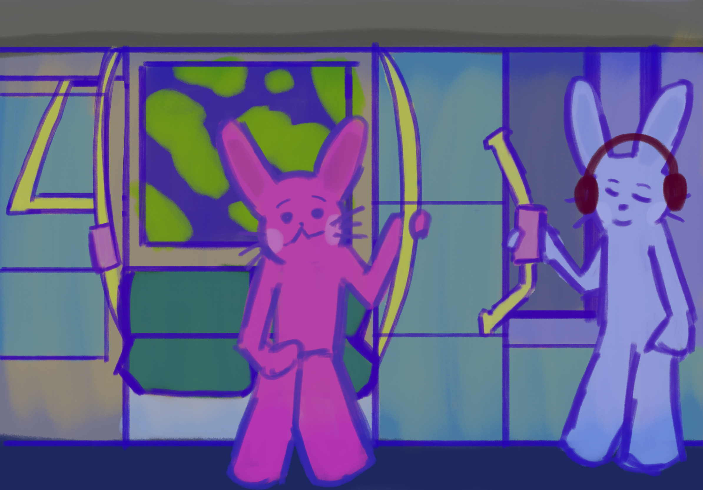

Learn More about Autism and Meltdowns
What is the definition of autism in Singapore? What are meltdowns, and are they the same as throwing a tantrum?

We are Year 2 students from the Design for Social Futures (DSF) programme at LASALLE College of the Arts. To support the mobility rights of autistic and neurodivergent individuals, we have developed the Calm Cabin, a space designed to make public transportation more accessible and comfortable for everyone.
This website introduces meltdowns, something that people with autism face as well as a guide on how to use emotion cards. It is designed to support sensory needs and help make public transportation more welcoming.
We hope to create a world where everyone feels like they belong and are welcomed, and can travel on public transportation with dignity and ease.
Calm Cabin is designed not only for people with ASD but also for people who need to distance from the noise and overstimulating stimuli in the train. The cabin itself is separated from any other cabins to block the noise and visual elements that might lead people to stress.
Earthy muted tones are applied for visual comfort; other elements such as acoustic padding and squishy handles are implemented to help commuters redirect their attention away from triggers.
One of the most important things in this cabin is the lava lamp display, which helps to gradually focus on slow and calming visuals in order to avoid other stimuli such as vivid coloured advertisements. For the same reason, this cabin is ad-free. When the train is close to the station, the screen slowly indicates key information about the journey, such as train station names and the amount of time to reach the next station.

What is the definition of autism in Singapore? What are meltdowns, and are they the same as throwing a tantrum?
Click here to play a fun activity to prepare you and your loved ones for your train journey!
Learn more about what you or your loved ones can do as someone who experiences meltdowns, or how you can help someone who is having a meltdown.
Did this project strike a chord with you? Share your reflections with us, we would love to hear from you!
Adriel Yap Autism Advocate
Justin Tham Tong’An Autism Advocate, DSF Y1 Student